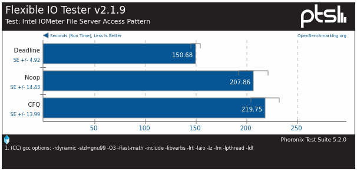
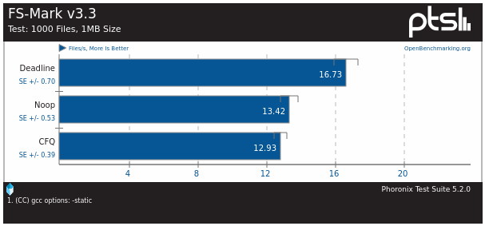
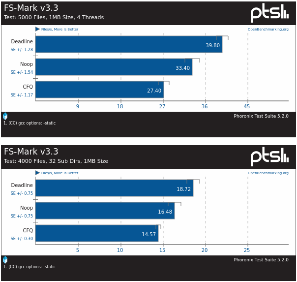

Ядро Linux имеет несколько планировщиков ввода-вывода. Они имели смысл когда использовались жесткие диски с блинами (HDD). Они помогали таким дискам минимизировать перемещение головок. С появлением SSD использование шедулеров изменяется.
Обычно в дистрибутивах стоит шедулер CFQ. Если в системе обычный HDD, то данный планировщик луше оставить. А для SSD данный планировщик будет только мешать, и луше установить noop, он хотя бы ничего не будет делать, только склеивать соседние транзакции.
Однако лучшим выбором для SSD-диска будет планировщик deadline. Вот как он работает:
Deadline I/O Scheduler хранит отсортированную очередь, и вводит две дополнительные очереди: FIFO очередь на чтение и FIFO очередь на запись. Записи в каждой из этих очередей отсортированы по времени поступления (фактически, первый вошел - первый вышел). Каждому запросу в очереди FIFO назначено время окончания. Для очереди запросов чтения - это 500 миллисекунд. Для очереди запросов записи - это пять секунд. При поступлении нового I/O запроса, он вставляется-сортируется в стандартную очередь и помещается в конец соответствующей (на чтение или запись) FIFO очереди.
Как правило, к жесткому диску посылаются запросы ввода/вывода с головы стандартной отсортированной очереди. Это максимизирует общую пропускную способность при минимизации операций поиска и установки головок на диске, так как нормальная очередь сортируется по номеру блока (как и с Linus Elevator). Когда у записи вначале списка одной из дополнительных FIFO очередей истечет назначенное время, I/O scheduler останавливает обработку I/O запросов из стандартной очереди, и начинает обслуживание запросов из этой FIFO очереди. I/O scheduler проверяет и обрабатывает запросы только с головы очереди, где находятся старейшие запросы.
Таким образом, Deadline I/O Scheduler поддерживает эффективную общую пропускную способность без голодания какого-либо одного запроса недопустимо длительное время. Проблема writes-starving-reads сводится к минимуму.
Эффективность планировщика deadline подтверждаются замерами сайта phoronix.com.
https://www.phoronix.com/review/linux_316_iosched/2
With the Flexible I/O Tester, deadline was the fastest over Noop and CFQ:


Getting started with FS-Mark, the Crucial MX100 SSD on Ubuntu 14.04 with the Linux 3.16 kernel was still the fastest using the deadline scheduler:
